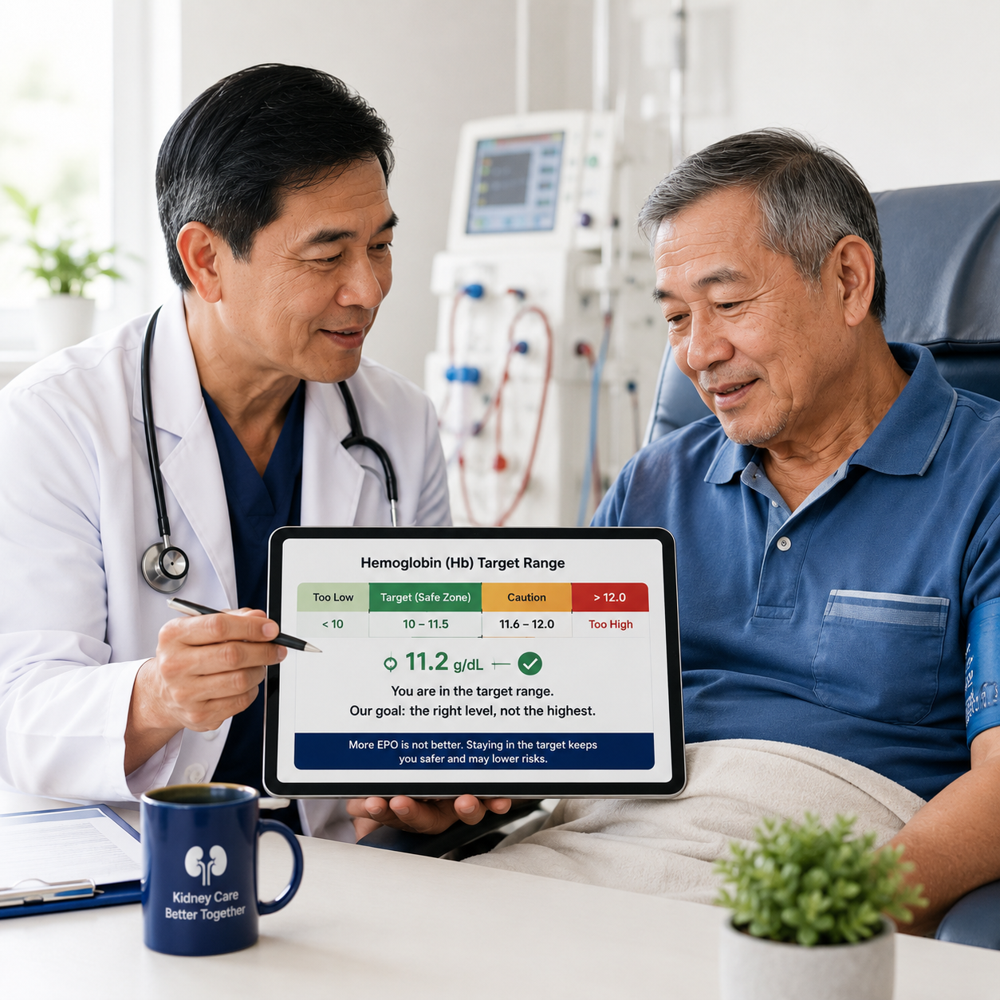
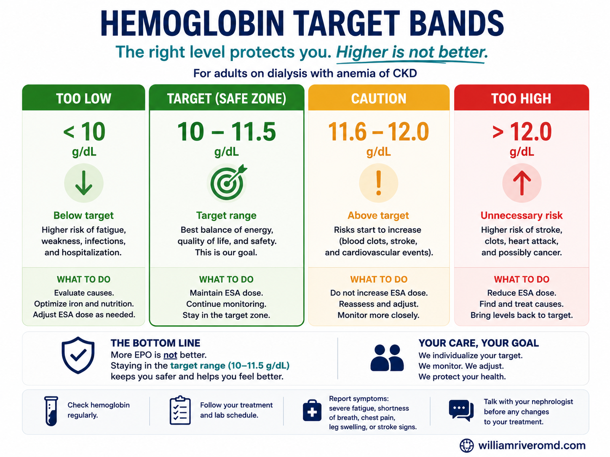
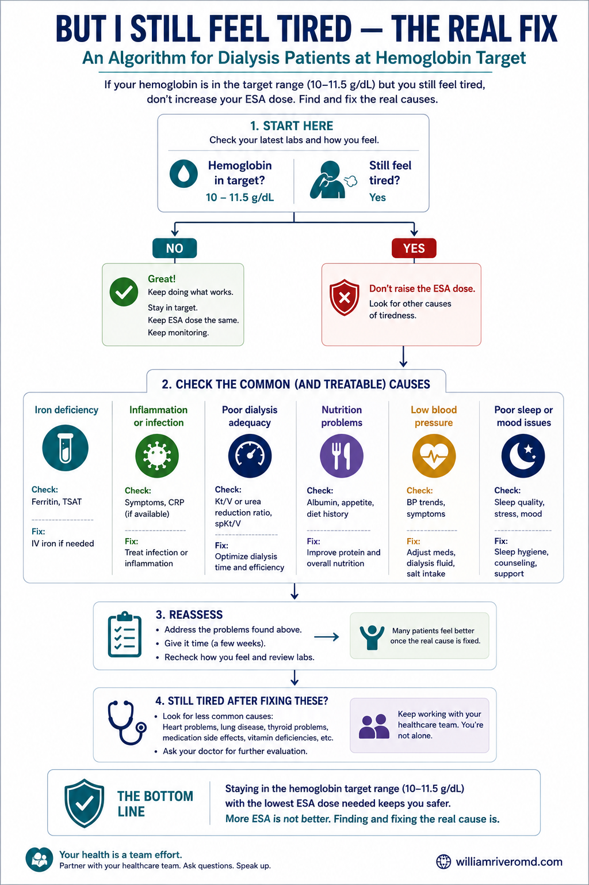

Once hemoglobin is in the safe target band, a higher EPO dose adds risk, not benefit.Kapag nasa ligtas na target na ang hemoglobin, ang mas mataas na dosis ng EPO ay nagdadagdag ng panganib, hindi benepisyo.Kung naa na sa luwas nga target ang hemoglobin, ang mas taas nga dosis sa EPO magdugang og peligro, dili benepisyo.Nung atyu na king ligtas a target ing hemoglobin, ing mas matas a dosis ning EPO magdagdag yang peligru, ali benepisyu.
“Doc, can you just increase my EPO? PhilHealth covers it anyway.”“Doc, pwede bang dagdagan na lang ang EPO ko? Sagot naman ng PhilHealth.”“Doc, pwede ba dugangan na lang akong EPO? Sagot man sa PhilHealth.”“Doc, malyari mu wari dagdagan ne mu ing kakung EPO? Sagut na man ning PhilHealth.”
This is one of the most common requests in the dialysis unit. It feels logical — if EPO builds blood, more EPO should mean more energy. But the science says the opposite once you reach target. This guide explains why, in plain language, and what actually fixes the tiredness. Isa ito sa pinakakaraniwang hiling sa dialysis unit. Mukhang lohikal — kung gumagawa ng dugo ang EPO, mas maraming EPO dapat mas maraming lakas. Ngunit kabaligtaran ang sinasabi ng agham kapag umabot ka na sa target. Ipinapaliwanag ng gabay na ito kung bakit, sa simpleng salita, at kung ano talaga ang lunas sa pagod. Usa kini sa pinakakomon nga hangyo sa dialysis unit. Morag lohikal — kung maghimo og dugo ang EPO, mas daghang EPO angay mas daghang kusog. Apan baliktad ang giingon sa siyensiya kung naabot na nimo ang target. Gipasabot niini nga giya ngano, sa yano nga pinulongan, ug unsa gyud ang tambal sa kakapoy. Metung ya ini karing pekamarakal a kakontak king dialysis unit. Maging lohikal ya — nung gagawa yang daya ing EPO, mas dakal a EPO dapat mas dakal a sikan. Dapot kabaligtaran ya ing sasabian ning siyensya nung miras na ka king target. Paliwanan na ning gabay a ini nung bakit, king payaping amanu, at nanu ing talagang lunas king pamangaldas.
What EPO Actually DoesAno ang Talagang Ginagawa ng EPOUnsa Gyud ang Buhaton sa EPONanu ing Talagang Gagawan ning EPO
Healthy kidneys make a natural hormone called erythropoietin (EPO). It tells your bone marrow to make red blood cells, which carry oxygen. In kidney failure, the kidneys stop making enough EPO, so you become anemic (low blood). ESAs (erythropoiesis-stimulating agents — like epoetin and darbepoetin) are man-made versions of this hormone given to correct the anemia. Ang malusog na bato ay gumagawa ng likas na hormone na tinatawag na erythropoietin (EPO). Sinasabihan nito ang iyong bone marrow na gumawa ng pulang selula ng dugo, na nagdadala ng oxygen. Sa pagkasira ng bato, tumitigil ang bato sa paggawa ng sapat na EPO, kaya nagiging anemic ka (kulang sa dugo). Ang ESA (epoetin at darbepoetin) ay gawang-tao na bersyon ng hormone na ito para itama ang anemia. Ang himsog nga kidney maghimo og natural nga hormone nga gitawag og erythropoietin (EPO). Mosulti kini sa imong bone marrow nga maghimo og pula nga selula sa dugo, nga magdala og oxygen. Sa kidney failure, mohunong ang kidney sa paghimo og igong EPO, mao nga maanemic ka (kulang sa dugo). Ang ESA (epoetin ug darbepoetin) mao ang hinimo-sa-tawo nga bersyon niini nga hormone aron tul-iron ang anemia. Ing malusug a batu gagawa yang natural a hormone a aus da erythropoietin (EPO). Sasabian na ning kekang bone marrow a gumawa lalang malutung selula ning daya, a magdala oxygen. King pamasira ning batu, titigil ya ing batu king pamanggawa tamu EPO, anya maging anemic ka (kulang king daya). Ing ESA (epoetin at darbepoetin) gawa-taung bersyun ya na ning hormone a ini para ituldu ing anemia.
Key idea: EPO does not make blood “stronger.” It only tells the marrow how many red cells to make. Above the target, you are not getting better blood — you are just pushing a powerful drug harder. Pangunahing ideya: Hindi ginagawang “mas malakas” ng EPO ang dugo. Sinasabi lang nito kung ilang pulang selula ang gagawin. Sa itaas ng target, hindi ka nakakakuha ng mas magandang dugo — itinutulak mo lang nang mas malakas ang isang malakas na gamot. Pangunang ideya: Wala maghimo ang EPO og “mas kusgan” nga dugo. Mosulti lang kini kung pila ka pula nga selula ang himuon. Labaw sa target, wala ka makakuha og mas maayong dugo — gitulod lang nimo og mas kusog ang usa ka kusgan nga tambal. Pekamulang isip: E gagawang “mas masikan” ning EPO ing daya. Sasabian na mu nung pilan a malutung selula ing gawan. King babo ning target, e ka makakua tamung mas mayap a daya — titulak mu mu nang mas masikan ing metung a masikan a aspirina.
The Safe Zone: Your Hemoglobin TargetAng Ligtas na Saklaw: Ang Iyong Hemoglobin TargetAng Luwas nga Sakup: Ang Imong Hemoglobin TargetIng Ligtas a Sakup: Ing Kekang Hemoglobin Target
International kidney guidelines (KDIGO) set a deliberate ceiling. The goal is to relieve symptoms of anemia and avoid transfusions — not to reach a “normal” hemoglobin. Chasing a higher number with more EPO has repeatedly caused harm. Ang pandaigdigang patnubay sa bato (KDIGO) ay nagtakda ng sinadyang hangganan. Ang layunin ay maibsan ang sintomas ng anemia at maiwasan ang transfusion — hindi ang umabot sa “normal” na hemoglobin. Ang paghabol sa mas mataas na numero gamit ang mas maraming EPO ay paulit-ulit na nakapinsala. Ang internasyonal nga giya sa kidney (KDIGO) nagbutang og tinuyo nga kisame. Ang tumong mao ang pagpagaan sa sintomas sa anemia ug paglikay sa transfusion — dili ang pag-abot sa “normal” nga hemoglobin. Ang paggukod sa mas taas nga numero gamit ang mas daghang EPO balik-balik nga nakadaot. Ing internasyunal a gabay king batu (KDIGO) miglage yang tinuyu a kisame. Ing tudtud yang pamaglubas king sintomas ning anemia at pamaglakwan king transfusion — ali ing pamiras king “normal” a hemoglobin. Ing pamanigap king mas matas a numeru gamit ing mas dakal a EPO paulit-ulit yang minakit.

The hemoglobin target as a traffic light — aim for the green band (10–11.5 g/dL), not higher.Ang hemoglobin target bilang ilaw-trapiko — tumutok sa berdeng banda (10–11.5 g/dL), hindi mas mataas.Ang hemoglobin target isip suga sa trapiko — tumong sa berde nga banda (10–11.5 g/dL), dili mas taas.Ing hemoglobin target bilang ilo-trapiku — tudtud king berdeng banda (10–11.5 g/dL), ali mas matas.
| HemoglobinHemoglobinHemoglobinHemoglobin | ZoneSaklawSakupSakup | What it meansIbig sabihinKahuluganKabaldugan |
|---|---|---|
| < 10 g/dL | Below target | EPO may be increased — but check iron first.Maaaring dagdagan ang EPO — ngunit suriin muna ang iron.Mahimong dugangan ang EPO — apan susiha una ang iron.Malyaring dagdagan ing EPO — dapot lawan mu pamu ing iron. |
| 10–11.5 g/dL | Target — the goal | This is the safe zone. Hold the dose steady. Do not push higher.Ito ang ligtas na saklaw. Panatilihin ang dosis. Huwag itaas pa.Kini ang luwas nga sakup. Ipabilin ang dosis. Ayaw isaka pa.Iti ya ing ligtas a sakup. Panatilian ing dosis. E mu pa isaka. |
| > 11.5 g/dL | Above ceiling | Reduce or hold EPO. Higher levels raised strokes & clots in big trials.Bawasan o itigil ang EPO. Mas mataas na lebel ay nagdagdag ng stroke at clots sa malalaking pag-aaral.Kunhuran o hunungon ang EPO. Mas taas nga lebel nagdugang og stroke ug clots sa dagkong pagtuon.Bawasan o itigil ing EPO. Mas matas a lebel migdagdag stroke at clots karing maragul a pamanyaliksik. |
The New Evidence (2026): High ESA Doses & CancerAng Bagong Ebidensya (2026): Mataas na ESA at KanserAng Bag-ong Ebidensya (2026): Taas nga ESA ug KanserIng Bayung Ebidensya (2026): Matas a ESA at Kanser
A large 2026 nationwide Korean study followed over 35,000 dialysis patients. It compared those who developed a new cancer with similar patients who did not. The finding: Isang malaking pag-aaral sa Korea noong 2026 ang nagmonitor sa mahigit 35,000 pasyenteng naka-dialysis. Inihambing nito ang mga nagkaroon ng bagong kanser sa magkatulad na pasyente na hindi nagkaroon. Ang natuklasan: Usa ka dako nga pagtuon sa Korea niadtong 2026 nagsubay sa kapin 35,000 ka pasyente nga naa sa dialysis. Gitandi niini ang mga nakatagamtam og bag-ong kanser sa susama nga pasyente nga wala. Ang nakaplagan: Metung a maragul a pamanyaliksik king Korea anyang 2026 ing migsubay karing maygit 35,000 a pasyente a maki-dialysis. Ikinumpara na detang mika-bayung kanser karing kalupang pasyente a ala. Ing ametung:

Visual abstract — Kim et al. (JAMA Network Open 2026). The cancer signal tracked the ESA dose and was concentrated in patients aged 60 and older (an association, not proof of cause).Kim et al. 2026 sa isang sulyap — ang senyales ng kanser ay sumunod sa dosis ng ESA at nakatuon sa mga edad 60 pataas.Kim et al. 2026 sa usa ka pagtan-aw — ang senyales sa kanser misunod sa dosis sa ESA ug natuon sa edad 60 pataas.Kim et al. 2026 king metung a lawe — ing senyales ning kanser tinuki king dosis ning ESA at nakatuon karing edad 60 paitas.
The strongest signals were for cancers of the digestive system and lungs. The increase tracked with the dose of ESA — the aggressive, push-the-number-up strategy — not with simply being on EPO at a normal dose. Ang pinakamalakas na senyales ay para sa kanser ng sistema ng pagtunaw at baga. Ang pagtaas ay sumunod sa dosis ng ESA — ang agresibong itaas-ang-numero na pamamaraan — hindi sa simpleng paggamit ng EPO sa normal na dosis. Ang pinakakusog nga senyales alang sa kanser sa sistema sa paghilis ug baga. Ang pagtaas misunod sa dosis sa ESA — ang agresibo, isaka-ang-numero nga estratehiya — dili sa yano nga paggamit og EPO sa normal nga dosis. Ing pekamasikan a senyales para king kanser ning sistema ning pamantunaw at baga. Ing pamanyaka tinuki ya king dosis na ning ESA — ing agresibu, isaka-ya-ing-numeru a estratehiya — ali king payaping pamangamit EPO king normal a dosis.
Honest caveat: this is one observational study and cannot prove EPO causes cancer. It could not measure hemoglobin or iron. But it points the same direction as decades of earlier trials — and that direction is: do not chase high numbers. Tapat na paalala: ito ay isang obserbasyonal na pag-aaral at hindi mapapatunayan na ang EPO ang sanhi ng kanser. Hindi nito nasukat ang hemoglobin o iron. Ngunit tumuturo ito sa parehong direksyon ng mga naunang pag-aaral — at ang direksyong iyon ay: huwag habulin ang mataas na numero. Matinud-anon nga pahimangno: kini usa ka obserbasyonal nga pagtuon ug dili makapamatuod nga ang EPO mao ang hinungdan sa kanser. Wala kini makasukod sa hemoglobin o iron. Apan nagtudlo kini sa samang direksyon sa mga miaging pagtuon — ug kana nga direksyon mao: ayaw gukda ang taas nga numero. Tapat a paala: iti metung yang obserbasyunal a pamanyaliksik at e na malyaring patunayan a ing EPO ing sangkan ning kanser. E na asukat ing hemoglobin o iron. Dapot tuturu ya king kalupang direksyun da ring milabas a pamanyaliksik — at ing direksyun a iyan: e mu igap ing matas a numeru.
This Is Not New: The Older TrialsHindi Ito Bago: Ang Mga Naunang Pag-aaralDili Kini Bag-o: Ang mga Naunang PagtuonE Ya Bayu: Ding Milabas a Pamanyaliksik
Three large randomized trials (CHOIR, CREATE, and TREAT) already tested the idea of giving more EPO to reach higher hemoglobin. All found the same thing: aiming higher caused more strokes, more blood clots, and no real gain in quality of life. In TREAT, patients with a history of cancer who got high-dose ESA had more cancer deaths. Because of this, the US FDA places a boxed warning on these drugs. Tatlong malalaking pag-aaral (CHOIR, CREATE, at TREAT) ang sumubok na sa ideyang magbigay ng mas maraming EPO para umabot sa mas mataas na hemoglobin. Lahat ay nakakita ng parehong bagay: ang pagtataas ay nagdulot ng mas maraming stroke, mas maraming clots, at walang tunay na pakinabang sa kalidad ng buhay. Sa TREAT, ang mga pasyenteng may kasaysayan ng kanser na nakatanggap ng mataas na ESA ay mas maraming namatay sa kanser. Dahil dito, naglagay ang US FDA ng boxed warning sa mga gamot na ito. Tulo ka dagkong pagtuon (CHOIR, CREATE, ug TREAT) misulay na sa ideya nga maghatag og mas daghang EPO aron makaabot sa mas taas nga hemoglobin. Tanan nakakaplag sa samang butang: ang pagpataas nagdala og mas daghang stroke, mas daghang clots, ug walay tinuod nga ganansiya sa kalidad sa kinabuhi. Sa TREAT, ang mga pasyente nga adunay kasaysayan sa kanser nga nakadawat og taas nga ESA mas daghang namatay sa kanser. Tungod niini, ang US FDA nagbutang og boxed warning niini nga tambal. Atlung maragul a pamanyaliksik (CHOIR, CREATE, at TREAT) ing sinubuk na king ideyang mibie tamung dakal a EPO para miras king mas matas a hemoglobin. Anggang ila ametung da ing kalupang bage: ing pamanyaka migdala yang mas dakal a stroke, mas dakal a clots, at alang tutuung pakinabang king kalidad ning bie. King TREAT, deting pasyente a atin kasaysayan king kanser a mింakua matas a ESA mas dakal lang mete king kanser. Uli na niti, miglage ya ing US FDA boxed warning karing aspirin a deti.
Starting EPO: The Weight-Based Dose (EPO-Naïve)Pagsisimula ng EPO: Ang Dosis Ayon sa Timbang (Hindi Pa Gumagamit ng EPO)Pagsugod sa EPO: Ang Dosis Sumala sa Gibug-aton (Wala Pa Mogamit og EPO)Pamagsimula ning EPO: Ing Dosis Agpang king Timbang (E Pa Gagamit EPO)
For someone not yet on EPO, the starting dose is modest and based on body weight — and it is only started when hemoglobin is below 10 g/dL, after iron is checked. Notice the calculator defers EPO at a hemoglobin of 10 or above. The whole system is built to reach the target gently, not to push past it. Para sa hindi pa gumagamit ng EPO, ang panimulang dosis ay katamtaman lang at base sa timbang — at sinisimulan lang kapag wala pang 10 g/dL ang hemoglobin, pagkatapos suriin ang iron. Pansinin na ipinagpapaliban ng calculator ang EPO kapag 10 o pataas ang hemoglobin. Idinisenyo ang buong sistema para maabot ang target nang dahan-dahan, hindi para lagpasan ito. Alang sa wala pa mogamit og EPO, ang sinugdang dosis kasarangan lang ug base sa gibug-aton — ug sugdan lang kung ubos pa sa 10 g/dL ang hemoglobin, human masusi ang iron. Matikdi nga ipasibo sa calculator ang EPO kung 10 o pataas ang hemoglobin. Ang tibuok sistema gidesinyo aron maabot ang target hinay-hinay, dili aron lapason kini. Para king e pa gagamit EPO, ing simulang dosis katamtaman ya mu at base king timbang — at sisimulan ya mu nung mababa pa king 10 g/dL ing hemoglobin, kaibat lawan ing iron. Pansinan mu a ipagtagal na ning calculator ing EPO nung 10 o paitas ing hemoglobin. Ing buong sistema medisenyu ya para miras king target a marimla, ali para lampasan ya.
⚕ Starting doses follow FDA / EMA ESA labeling and KDIGO 2012. Epoetin alfa: 50 units/kg per dose, 3×/week (label range 50–100). Epoetin beta: 20 units/kg per dose, 3×/week SC. Darbepoetin alfa: 0.45 mcg/kg — once weekly on dialysis, every 4 weeks if not on dialysis (0.75 mcg/kg every 2 weeks is a labeled alternative). CERA (methoxy PEG-epoetin beta): 0.6 mcg/kg once every 2 weeks, switching to twice that dose once monthly when stable. Round to available vial strengths. Confirm iron repletion before the first dose. Physician confirmation and individualized assessment are required.
Try It: What Should Happen to the Dose?Subukan: Ano ang Dapat Mangyari sa Dosis?Sulayi: Unsa ang Angay Mahitabo sa Dosis?Subukan: Nanu ing Dapat Malyari king Dosis?
This is the same logic your nephrologist uses. Enter your numbers and see why — at or above target — the safe move is usually to hold or reduce, not increase. (Educational only; your doctor decides.) Ito ang parehong lohika na ginagamit ng iyong nephrologist. Ilagay ang iyong mga numero at tingnan kung bakit — sa o lampas sa target — ang ligtas na hakbang ay kadalasang panatilihin o bawasan, hindi dagdagan. (Pang-edukasyon lang; ang doktor mo ang magpapasya.) Kini ang samang lohika nga gigamit sa imong nephrologist. Isulod ang imong mga numero ug tan-awa ngano — sa o labaw sa target — ang luwas nga lihok kasagaran ipabilin o kunhuran, dili dugangan. (Pang-edukasyon lang; ang imong doktor ang modesisyon.) Iti ya ing kalupang lohika a gagamitan na ning kekang nephrologist. Ilage mu la ring kekang numeru at lawan mu nung bakit — king o maygit king target — ing ligtas a kibe karaniwan yang panatilian o bawasan, ali dagdagan. (Pang-edukasyun mu; ing kekang doktor ing magdesisyun.)
⚕ Based on KDIGO 2012 Anemia in CKD guidelines and FDA ESA labeling. Target Hgb: 10–11.5 g/dL. Do not intentionally target Hgb >11.5 g/dL. Do not increase dose more frequently than every 4 weeks. Unit protocols vary — physician confirmation and individualized assessment are required.
“But I Still Feel Tired” — The Real Fix“Pero Pagod Pa Rin Ako” — Ang Tunay na Lunas“Apan Kapoy Gihapon Ko” — Ang Tinuod nga Tambal“Dapot Pagal Ku Pa Mu Rin” — Ing Tutuung Lunas
If you are tired but your hemoglobin is already at target, more EPO is almost never the answer. The usual real causes are fixable — and the most common one is low iron. EPO cannot build red cells without enough iron, just as a factory cannot build cars without steel. Other causes: inflammation or infection, bleeding (often from the gut), under-dialysis, or high parathyroid hormone. Kung pagod ka pero nasa target na ang iyong hemoglobin, ang dagdag na EPO ay halos hindi kailanman ang sagot. Ang karaniwang tunay na sanhi ay naaayos — at ang pinakakaraniwan ay kulang sa iron. Hindi makakagawa ng pulang selula ang EPO nang walang sapat na iron, tulad ng pabrika na hindi makakagawa ng kotse nang walang bakal. Iba pang sanhi: pamamaga o impeksyon, pagdurugo (kadalasan sa bituka), kulang na dialysis, o mataas na parathyroid hormone. Kung kapoy ka apan ang imong hemoglobin naa na sa target, ang dugang nga EPO halos dili gyud mao ang tubag. Ang naandang tinuod nga hinungdan maayo-an — ug ang pinakakomon mao ang kulang nga iron. Dili makahimo og pula nga selula ang EPO kung walay igong iron, sama sa pabrika nga dili makahimo og awto kung walay puthaw. Uban pang hinungdan: hubag o impeksyon, pagdugo (kasagaran sa tinai), kulang nga dialysis, o taas nga parathyroid hormone. Nung pagal ka dapot atyu na king target ing kekang hemoglobin, ing dagdag a EPO halos e ne man ing sagut. Ing karaniwan a tutuung sangkan malyaring ituldu — at ing pekamarakal ya ing kulang king iron. E ya makagawa malutung selula ing EPO nung alang sukat a iron, anti ning pabrika a e makagawa kareta nung alang bakal. Aliwang sangkan: pamanlate o impeksyun, pamagdaya (karaniwan king bituka), kulang a dialysis, o matas a parathyroid hormone.

The real work-up for tiredness at target — find and fix the treatable cause instead of raising EPO.Ang tunay na pagsusuri sa pagod kapag nasa target — hanapin at lunasan ang sanhi sa halip na dagdagan ang EPO.Ang tinuod nga pagsusi sa kakapoy kung naa sa target — pangitaa ug ayuha ang hinungdan imbes nga dugangan ang EPO.Ing tutuung pamanyiyasat king pamangaldas nung atyu king target — pintunan at lunasan ing sangkan imbes a dagdagan ing EPO.
Check First: Is It Really Low Iron?Suriin Muna: Kulang ba Talaga sa Iron?Susiha Una: Kulang ba Gyud sa Iron?Lawan Pamu: Talagang Kulang ya king Iron?
Two blood tests — TSAT and ferritin — tell whether iron is the problem. Often, fixing iron raises hemoglobin and energy with no extra EPO at all. Dalawang blood test — TSAT at ferritin — ang nagsasabi kung iron ang problema. Madalas, ang pag-aayos ng iron ay nagtataas ng hemoglobin at lakas nang walang dagdag na EPO. Duha ka blood test — TSAT ug ferritin — ang mosulti kung iron ang problema. Sagad, ang pag-ayo sa iron magpataas sa hemoglobin ug kusog nga walay dugang nga EPO. Aduang blood test — TSAT at ferritin — ing sasabi nung iron ing problema. Karaniwan, ing pamanuldu king iron migpataas ya king hemoglobin at sikan a alang dagdag a EPO.
⚕ TSAT = (Serum Iron ÷ TIBC) × 100. Ferritin is an acute-phase reactant — raised by inflammation, infection, or malignancy independent of iron stores. Targets per KDIGO. Educational guidance only — iron therapy decisions require physician assessment.
Who Should Be Most CarefulSino ang Dapat PinakamaingatKinsa ang Angay PinakaampingNinu ing Dapat Pekamaingat
- Age 60 and above — this is exactly the group where the 2026 study saw the higher cancer risk with high doses.Edad 60 pataas — ito mismo ang grupo kung saan nakita ng pag-aaral noong 2026 ang mas mataas na panganib sa kanser sa mataas na dosis.Edad 60 pataas — kini gyud ang grupo diin nakita sa pagtuon sa 2026 ang mas taas nga peligro sa kanser sa taas nga dosis.Edad 60 paitas — iti mismu ing grupu nung nu akit na ning pamanyaliksik anyang 2026 ing mas matas a peligru king kanser king matas a dosis.
- A history of cancer, or a strong family history.May kasaysayan ng kanser, o malakas na kasaysayan sa pamilya.Adunay kasaysayan sa kanser, o kusog nga kasaysayan sa pamilya.Atin kasaysayan king kanser, o masikan a kasaysayan king pamilya.
- Past stroke or blood clots — high hemoglobin makes blood thicker and clots more likely.Nagkaroon ng stroke o clots — ang mataas na hemoglobin ay nagpapalapot ng dugo at nagdaragdag ng tsansa ng clots.Naa nay stroke o clots — ang taas nga hemoglobin maghimo og baga nga dugo ug mas posible nga clots.Mika stroke o clots — ing matas a hemoglobin gagawang makapal ya ing daya at mas posibli ing clots.
What to Ask Your NephrologistAno ang Itatanong sa Iyong NephrologistUnsa ang Ipangutana sa Imong NephrologistNanu ing Itanung king Kekang Nephrologist
If you feel tired and were about to ask for more EPO, ask these instead: Kung pagod ka at malapit nang humingi ng dagdag na EPO, itanong na lang ito: Kung kapoy ka ug hapit na mangayo og dugang nga EPO, kini hinuon ang ipangutana: Nung pagal ka at malapit na kang manyad dagdag a EPO, iti mu na ing itanung:
- “What is my latest hemoglobin — am I already at the KDIGO target?”“Ano ang pinakabagong hemoglobin ko — nasa KDIGO target na ba ako?”“Unsa ang akong pinakabag-ong hemoglobin — naa na ba ko sa KDIGO target?”“Nanu ing kakung pekabayung hemoglobin — atyu na ku king KDIGO target?”
- “Have we checked my iron (TSAT and ferritin)?”“Nasuri na ba ang aking iron (TSAT at ferritin)?”“Nasusi na ba ang akong iron (TSAT ug ferritin)?”“Alawan ne ba ing kakung iron (TSAT at ferritin)?”
- “Could my tiredness be from something other than low blood?”“Maaari kayang ibang dahilan ang pagod ko, hindi kakulangan sa dugo?”“Mahimo kaha nga lain ang hinungdan sa akong kakapoy, dili kulang sa dugo?”“Malyari ya kayang aliwang sangkan ing kakung pamangaldas, ali kulang king daya?”
On PhilHealth: coverage means the cost is paid for — it does not mean a higher dose is recommended or safe for you. Your doctor doses to the target that protects you, not to the maximum the benefit will pay for. Tungkol sa PhilHealth: ang saklaw ay nangangahulugang bayad ang gastos — hindi ito nangangahulugang mas mataas na dosis ang inirerekomenda o ligtas para sa iyo. Ang doktor mo ay nagbibigay ng dosis ayon sa target na nagpoprotekta sa iyo, hindi sa maximum na sasagutin ng benepisyo. Bahin sa PhilHealth: ang sakup nagpasabot nga bayad ang gasto — dili kini nagpasabot nga mas taas nga dosis ang girekomenda o luwas para nimo. Ang imong doktor mohatag og dosis sumala sa target nga manalipod nimo, dili sa maximum nga bayran sa benepisyo. Tungkul king PhilHealth: ing sakup kabaldugan na bayad ne ing gastu — ali na kabaldugan a mas matas a dosis ing rekomendadu o ligtas para keka. Ing kekang doktor magbie yang dosis agpang king target a magprotekta keka, ali king maximum a babayaran ning benepisyu.
Bottom LinePangunahing MensaheLintunganay nga MensahePekamulang Mensahe
- EPO/ESA corrects anemia — it does not make blood “stronger.”Itinatama ng EPO/ESA ang anemia — hindi nito ginagawang “mas malakas” ang dugo.Gitul-id sa EPO/ESA ang anemia — wala kini maghimo og “mas kusgan” nga dugo.Tutulduan na ning EPO/ESA ing anemia — e na gagawang “mas masikan” ing daya.
- The target is 10–11.5 g/dL. Reaching it is success; pushing past it is risk.Ang target ay 10–11.5 g/dL. Ang pag-abot dito ay tagumpay; ang paglampas dito ay panganib.Ang target 10–11.5 g/dL. Ang pag-abot niini kalamposan; ang paglapas niini peligro.Ing target 10–11.5 g/dL. Ing pamiras kaniti tagumpe; ing pamanlampas kaniti peligru.
- In older dialysis patients, high ESA doses were linked to more cancer in 2026 — on top of long-known stroke and clot risks.Sa mas matatandang pasyenteng naka-dialysis, ang mataas na ESA ay naiugnay sa mas maraming kanser noong 2026 — bukod pa sa matagal nang alam na panganib ng stroke at clots.Sa tigulang nga pasyente sa dialysis, ang taas nga ESA gilambigit sa mas daghang kanser niadtong 2026 — dugang pa sa dugay nang nailhang peligro sa stroke ug clots.Karing mas matuang pasyente a maki-dialysis, ing matas a ESA mekaugnay ya king mas dakal a kanser anyang 2026 — bukud pa king matagal nang balung peligru king stroke at clots.
- If you are tired at target, the fix is usually iron or another treatable cause — not more EPO.Kung pagod ka sa target, ang lunas ay kadalasang iron o ibang nalulunasang sanhi — hindi dagdag na EPO.Kung kapoy ka sa target, ang tambal kasagaran iron o lain nga matambalan nga hinungdan — dili dugang nga EPO.Nung pagal ka king target, ing lunas karaniwan iron o aliwang malunasan a sangkan — ali dagdag a EPO.